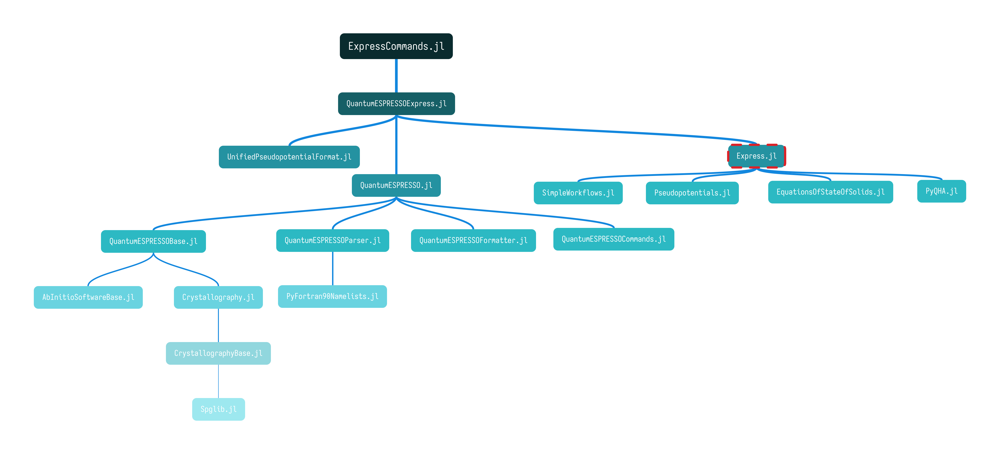

Express: an extensible, lightweight, high-throughput, high-level workflow framework that aims to automate ab initio calculations
Documentation for Express.
See the Index for the complete list of documented functions and types.
The code is hosted on GitHub, with some continuous integration services to test its validity.
This repository is created and maintained by @singularitti. You are very welcome to contribute.
Package Features
Express is an extensible, high-throughput, high-level workflow framework that aims to automate ab initio calculations for the materials science community. Express is shipped with well-tested workflow templates, including structure optimization, equation of state (EOS) fitting, phonon spectrum (lattice dynamics) calculation, and thermodynamic property calculation in the framework of the quasi-harmonic approximation (QHA). It is designed to be highly modularized so that its components can be reused across various occasions, and customized workflows can be built on top of that.
The differences between express and Express: express is the project's name, it is a collection of Julia packages. Its core is Express.jl, managing and dispatching the rest packages. Express is short for Express.jl, which is the most important component of express. The direct components of express are:

Express.jlprovides a high-level interface to all the workflows, including file reading and writing, job creation, submission, monitoring, result retrieving, and data analysis. To work with specific software, install the corresponding plugin, e.g.,QuantumESPRESSOExpress.jlfor Quantum ESPRESSO.ExpressCommands.jlis a user-friendly command-line interface ofExpress.jlfor non-developers. It installs an executable 'xps' that can execute code from configuration files provided by users.EquationsOfStateOfSolids.jlfits energy (or pressure) vs. volume results to equations of state, etc. These features are repetitively used in the equation of state workflow.Crystallography.jlcalculates a crystal's primitive cell (or supercell) volume from lattice parameters, finds symmetry operations and generates high symmetry points in the Brillouin zone, etc.PyQHA.jlis a Julia wrapper of the Pythonqhapackage, which can calculate several thermodynamic properties of both single- and multi-configuration crystalline materials in the framework of quasi-harmonic approximation (QHA). Theqhacode is the foundation of the QHA workflow.Geotherm.jlis a Julia interpretation of the Fortran code we used in this paper, which calculates the isentropic temperature/pressure gradient (geotherm) using thermodynamic properties obtained with the QHA workflow.Pseudopotentials.jlpresents a database for storing and querying pseudopotentials used in ab initio calculations.SimpleWorkflows.jlis the skeleton of the workflow system, which defines building blocks, composition rules, and operation order of workflows.
The QuantumESPRESSOExpress.jl is a special type of package called "plugin of express" for handling ab initio software such as Quantum ESPRESSO. Other plugins for other software are possible. The dependencies of QuantumESPRESSOExpress.jl are listed below.
AbInitioSoftwareBase.jlprovides a standard API for some popular ab initio software such as Quantum ESPRESSO.QuantumESPRESSOBase.jldeclares basic data types and methods for manipulating crystal structures, generating input files for Quantum ESPRESSO, error checking before running, etc.QuantumESPRESSOParser.jlparses the input or output files of Quantum ESPRESSO to extract and analyze data.QuantumESPRESSOFormatter.jlformats the input files of Quantum ESPRESSO.QuantumESPRESSOCommands.jlis a command-line interface that exports the commands Quantum ESPRESSO uses in a configurable way.QuantumESPRESSO.jlis simply a wrapper of the types, methods, and commands defined inQuantumESPRESSOBase.jl,QuantumESPRESSOParser.jl,QuantumESPRESSOFormatter.jl, andQuantumESPRESSOCommands.jlunder a common namespace.
Installation
The package can be installed with the Julia package manager. From the Julia REPL, type ] to enter the Pkg REPL mode and run:
pkg> add ExpressOr, equivalently, via the Pkg API:
julia> import Pkg; Pkg.add("Express")Resolving package versions... Installed Adapt ─────────────────────── v3.6.2 Installed PooledArrays ──────────────── v1.4.2 Installed TableTraits ───────────────── v1.0.1 Installed SentinelArrays ────────────── v1.4.0 Installed Tables ────────────────────── v1.10.1 Installed InlineStrings ─────────────── v1.4.0 Installed Setfield ──────────────────── v1.1.1 Installed DataValueInterfaces ───────── v1.0.0 Installed IteratorInterfaceExtensions ─ v1.0.0 Installed Roots ─────────────────────── v1.2.0 Installed LaTeXStrings ──────────────── v1.3.0 Installed InvertedIndices ───────────── v1.3.0 Installed AbInitioSoftwareBase ──────── v0.6.5 Installed PrettyTables ──────────────── v2.2.4 Installed SimpleWorkflows ───────────── v0.16.2 Installed ArrayInterface ────────────── v7.4.11 Installed TryCatch ──────────────────── v0.1.1 Installed FiniteDiff ────────────────── v2.21.1 Installed DataFrames ────────────────── v1.5.0 Installed StringManipulation ────────── v0.3.0 Installed Express ───────────────────── v0.9.2 Updating `~/work/Express.jl/Express.jl/docs/Project.toml` [b12df14e] ~ Express v0.9.1 `~/.julia/dev/Express` ⇒ v0.9.2 Updating `~/work/Express.jl/Express.jl/docs/Manifest.toml` ⌅ [df5135bc] ↓ AbInitioSoftwareBase v0.10.0 ⇒ v0.6.5 [79e6a3ab] + Adapt v3.6.2 [4fba245c] + ArrayInterface v7.4.11 [30b0a656] - ArrayInterfaceCore v0.1.29 [a33af91c] - CompositionsBase v0.1.2 [a93c6f00] + DataFrames v1.5.0 [e2d170a0] + DataValueInterfaces v1.0.0 [db8ca866] - EasyJobsBase v0.10.0 [e2ba6199] - ExprTools v0.1.9 [b12df14e] ~ Express v0.9.1 `~/.julia/dev/Express` ⇒ v0.9.2 [6bf22d12] - ExpressBase v0.4.3 [6a86dc24] ↑ FiniteDiff v2.17.0 ⇒ v2.21.1 [842dd82b] + InlineStrings v1.4.0 [41ab1584] + InvertedIndices v1.3.0 [82899510] + IteratorInterfaceExtensions v1.0.0 [b964fa9f] + LaTeXStrings v1.3.0 [6fafb56a] - Memoization v0.2.1 [626554b9] - MetaGraphs v0.7.2 [2dfb63ee] + PooledArrays v1.4.2 [08abe8d2] + PrettyTables v2.2.4 ⌅ [f2b01f46] ↓ Roots v1.4.1 ⇒ v1.2.0 [91c51154] + SentinelArrays v1.4.0 [efcf1570] ↑ Setfield v0.8.2 ⇒ v1.1.1 ⌅ [6a97d125] ↓ SimpleWorkflows v0.25.2 ⇒ v0.16.2 [892a3eda] + StringManipulation v0.3.0 [3783bdb8] + TableTraits v1.0.1 [bd369af6] + Tables v1.10.1 [6d80a3f9] - Thinkers v0.2.0 [410a4b4d] - Tricks v0.1.7 [0ca489f0] + TryCatch v0.1.1 [a7773ee8] - UnitfulAtomic v1.0.0 [06c00241] - UnitfulParsableString v0.1.5 [0625e100] - ValSplit v0.1.0 Info Packages marked with ⌅ have new versions available but compatibility constraints restrict them from upgrading. To see why use `status --outdated -m` Precompiling project... ✓ LaTeXStrings ✓ DataValueInterfaces ✓ InvertedIndices ✓ Adapt ✓ TryCatch ✓ IteratorInterfaceExtensions ✓ SentinelArrays ✓ PooledArrays ✓ Setfield ✓ StringManipulation ✓ InlineStrings ✓ Roots ✓ ArrayInterface ✓ Adapt → AdaptStaticArraysExt ✓ TableTraits ✓ AbInitioSoftwareBase ✓ ArrayInterface → ArrayInterfaceStaticArraysCoreExt ✓ FiniteDiff ✓ Tables ✓ FiniteDiff → FiniteDiffStaticArraysExt ✓ NLSolversBase ✓ OptimBase ✓ LsqFit ✓ EquationsOfStateOfSolids ✓ PrettyTables ✓ DataFrames ✓ SimpleWorkflows ✓ Express 28 dependencies successfully precompiled in 145 seconds. 88 already precompiled. 10 dependencies precompiled but different versions are currently loaded. Restart julia to access the new versions 2 dependencies had warnings during precompilation: ┌ Express [b12df14e-adf7-11e9-0606-d5813a258349] │ /home/runner/.julia/conda/3/x86_64/lib/python3.10/site-packages/qha/single_configuration.py:20: NumbaDeprecationWarning: The 'nopython' keyword argument was not supplied to the 'numba.jit' decorator. The implicit default value for this argument is currently False, but it will be changed to True in Numba 0.59.0. See https://numba.readthedocs.io/en/stable/reference/deprecation.html#deprecation-of-object-mode-fall-back-behaviour-when-using-jit for details. │ @jit(float64[:](float64, float64[:], float64[:], float64[:, :, :], boolean), cache=True) │ /home/runner/.julia/conda/3/x86_64/lib/python3.10/site-packages/qha/single_configuration.py:20: NumbaWarning: │ Compilation is falling back to object mode WITH looplifting enabled because Function "free_energy" failed type inference due to: Untyped global name 'ho_free_energy': Cannot determine Numba type of <class 'numpy.ufunc'> │ │ File "../../../../../.julia/conda/3/x86_64/lib/python3.10/site-packages/qha/single_configuration.py", line 45: │ def free_energy(temperature: Scalar, q_weights: Vector, static_energies: Vector, frequencies: Array3D, │ <source elided> │ scaled_q_weights: Vector = q_weights / np.sum(q_weights) │ vibrational_energies: Vector = np.dot(ho_free_energy(temperature, frequencies).sum(axis=2), scaled_q_weights) │ ^ │ │ @jit(float64[:](float64, float64[:], float64[:], float64[:, :, :], boolean), cache=True) │ /home/runner/.julia/conda/3/x86_64/lib/python3.10/site-packages/numba/core/object_mode_passes.py:151: NumbaWarning: Function "free_energy" was compiled in object mode without forceobj=True. │ │ File "../../../../../.julia/conda/3/x86_64/lib/python3.10/site-packages/qha/single_configuration.py", line 21: │ @jit(float64[:](float64, float64[:], float64[:], float64[:, :, :], boolean), cache=True) │ def free_energy(temperature: Scalar, q_weights: Vector, static_energies: Vector, frequencies: Array3D, │ ^ │ │ warnings.warn(errors.NumbaWarning(warn_msg, │ /home/runner/.julia/conda/3/x86_64/lib/python3.10/site-packages/numba/core/object_mode_passes.py:161: NumbaDeprecationWarning: │ Fall-back from the nopython compilation path to the object mode compilation path has been detected. This is deprecated behaviour that will be removed in Numba 0.59.0. │ │ For more information visit https://numba.readthedocs.io/en/stable/reference/deprecation.html#deprecation-of-object-mode-fall-back-behaviour-when-using-jit │ │ File "../../../../../.julia/conda/3/x86_64/lib/python3.10/site-packages/qha/single_configuration.py", line 21: │ @jit(float64[:](float64, float64[:], float64[:], float64[:, :, :], boolean), cache=True) │ def free_energy(temperature: Scalar, q_weights: Vector, static_energies: Vector, frequencies: Array3D, │ ^ │ │ warnings.warn(errors.NumbaDeprecationWarning(msg, └ ┌ Roots [f2b01f46-fcfa-551c-844a-d8ac1e96c665] │ WARNING: method definition for #init_state!#5 at /home/runner/.julia/packages/Roots/6cvBF/src/find_zero.jl:125 declares type variable S but does not use it. │ WARNING: method definition for #init_state!#5 at /home/runner/.julia/packages/Roots/6cvBF/src/find_zero.jl:125 declares type variable T but does not use it. │ WARNING: method definition for #find_zero#20 at /home/runner/.julia/packages/Roots/6cvBF/src/bracketing.jl:303 declares type variable M but does not use it. └
Documentation
- STABLE — documentation of the most recently tagged version.
- DEV — documentation of the in-development version.
Here is a video introduction to this code:

Project status
The package is tested against, and being developed for, Julia 1.6 and above on Linux, macOS, and Windows.
Questions and contributions
Usage questions can be posted on our discussion page.
Contributions are very welcome, as are feature requests and suggestions. Please open an issue if you encounter any problems. The Contributing page has a few guidelines that should be followed when opening pull requests and contributing code.
Manual outline
- Installation Guide
- Configuration files
- How to run
Expressfrom command line - Tracking and monitoring jobs in a workflow
- Contributing
- Style Guide
- Design Principles
- Consistency vs adherence
- Community contribution guidelines
- Open source contributions are allowed to start small and grow over time
- Generic code is preferred unless code is known to be specific
- Internal types should match the types used by users when possible
- Trait definition and adherence to generic interface is preferred when possible
- Macros should be limited and only be used for syntactic sugar
- Errors should be caught as high as possible, and error messages should be contextualized for newcomers
- Subpackaging and interface packages is preferred over conditional modules via Requires.jl
- Functions should either attempt to be non-allocating and reuse caches, or treat inputs as immutable
- Out-of-place and immutability is preferred when sufficient performant
- Tests should attempt to cover a wide gamut of input types
- When in doubt, a submodule should become a subpackage or separate package
- Globals should be avoided whenever possible
- Type-stable and type-grounded code is preferred wherever possible
- Closures should be avoided whenever possible
- Numerical functionality should use the appropriate generic numerical interfaces
- Functions should capture one underlying principle
- Internal choices should be exposed as options whenever possible
- Prefer code reuse over rewrites whenever possible
- Prefer to not shadow functions
- Troubleshooting
- FAQ